Just a little over a year ago I wrote about how we got our first 10 paying users at ParseHub. Fast forward and we are now a company with thousands of users and hundreds of paying customers. We were able to reach the goal of growing 20% month over month, completely bootstrapped. That means we received 0 dollars from investors in our entire company history and were able to hire staff and expand operations only when our revenue grew.
A year ago we were a team of 3 people working remotely to save money on office rent and all of the other expenses that come with living in downtown Toronto. We lived in our parents homes and worked out of their basements. In March 2016, we finally made a big step forward – we moved into our first office, located at Yonge & College. Two months later, we outgrew our first office space. Now, we are a team of 12 (including very dedicated interns).
Here is a not-so-brief story of how we did it....
After we polished the product a bit more and found our first few customers, we started focusing on product marketing. Our main goal was to make ParseHub more human, lively and reachable.
1. Started blog and focused on long-form content
Looking back, I wish we started publishing content at the very beginning. Instead we waited over 6 months to launch the ParseHub Blog. Consistently publishing content, for the past year, helped us grow website traffic tremendously through organic search. Relevant and engaging articles gave us a reason to reach out to online communities and influence others to spread the word about ParseHub.
We focused on a few types of content:
- “How-to Tutorials” explaining how to use our product to get data and how to use other techniques to analyze and visualize the data scraped by ParseHub
- “BuzzFeed” type of articles for the general public that included a little bit of data-science.
- “Data is Beautiful” articles that were nicely analyzed and visualized with cleaver nuggets of research.
- Articles that provided ideas and inspiration to our target customers - such as developers, data scientists, business executives, etc.
- Stories that documented our startup journey and learnings.
The best performers:
The articles that had the most views over time and also boosted up our search rankings the most explained use cases for different types of customers. We created content for Executives, data scientists, pricing analysts, marketers, sales teams, developers, eCommerce companies and people curious about sports statistics.
A few “winner” examples:
- We scraped and analyzed 4,000 + posts on HackerNews and marketing forums such as GrowthHackers. We showed what it takes to get your post to the very first page of every forum, by analyzing titles and sentiment. The post had 3,000 + views on the day it was published.
- One of the partners from 500 startups reposted our “Cost of living and visiting 26 start-up cities” blog post which reached 6,000 + views in just a few days. Portions of this article were re-posted almost a year later by micro blogs.
- One of our MBA students, Sheetal Persaud, analyzed 3,000 products from Well.ca, Walmart and Loblaws to find that women pay 43% more on personal care items than men. I pitched the article to Financial Post and the next day CBC asked us to do a live TV interview on the topic, and many other publications and radio stations in Canada reported our findings.
The verdict:
The “winner” blog posts were great at getting us awareness and recognition. However, blog posts that were more dry, long-form and included concrete examples of how to use ParseHub to solve a specific problem were better at converting readers to users.
Focus on both unique and practical content. The unique “BuzzFeed” style blog posts, with content that is attention grabbing, will bring you web traffic and awareness. The content most useful to your target audience will get you more conversions to sign-ups.
2. Pitched guest posts on niche publications
Once we had about 10 + blog posts on our own website and a “portfolio” of work to show, we started creating content for others to publish on our behalf. We targeted more niche sites like KDNuggets to get the attention of data scientists, Programmable Web to show developers how to work with our API andScraping.pro to directly engage the web scraping community.
Do this to get the reporter or blogger's attention:
In your first email or phone call to the reported, offer them something of value right away. It could be a discounted or free version of your software, marketing or tech services, an idea, some feedback on their content and website, or an introduction to someone they might find useful. You can also pitch a pre written guest post that is not related to your company, but is eye-catching to the readers of the publication.
Email example:
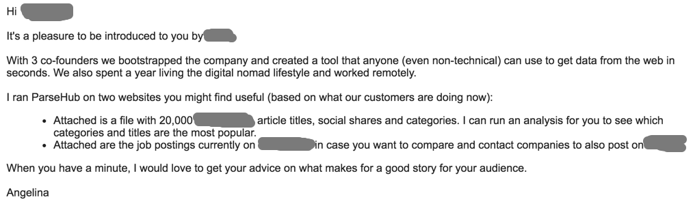
The 3-step formula to getting the attention of reporters or bloggers:
- Paragraph 1: Try to get an introduction to the report from someone you know - another startup founder,
investor, mutual acquaintance or friend. - Paragraph 2: Clearly state your unique value proposition - what do you bring to the world that no one
else does? Also, mention anything that you have done that is different from other startups. - Paragraph 3: Offer your product at a discount or provide another service that the reporter will find
valuable.
I got on the phone with a reporter and offered to show him how ParseHub works on any website he wants data
from. He wanted data from a job board, so he could see who is hiring in the tech industry.
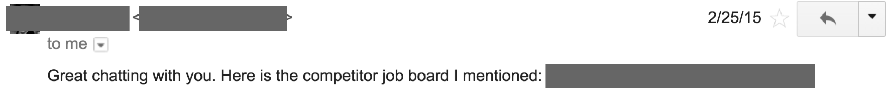
Offer something of valuable to the reporter right away – in the first email. This will make you stand out.
Do this if you have no money!
When we started we could not pay bloggers to feature us in their publications. Bartering – exchanging
some value only you can provide – works wonders.
In the example below, I emailed a reported back telling them that the price of $400 per post was too much
for us.
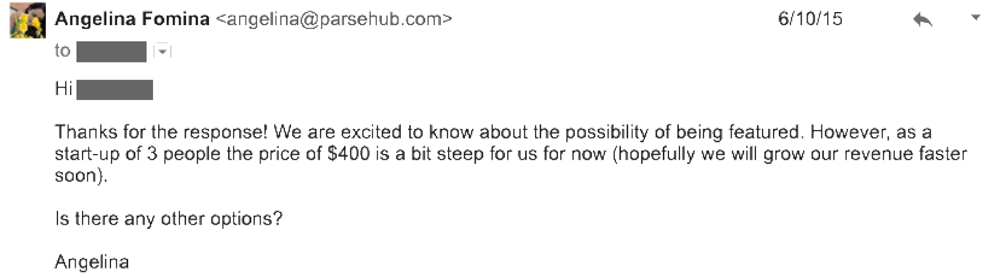
After a few emails, he offered to post about us for free if we scraped data from a website for him.
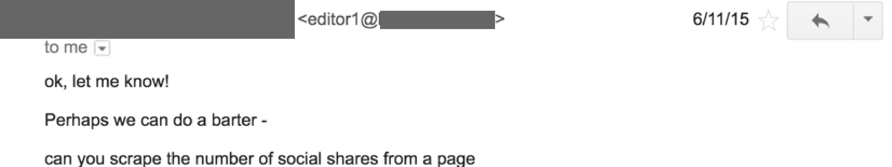
Find something valuable that only you can do and offer it in exchange for a free blog post.
3. Created an email drip campaign that converts 41% of users to paid customers
As soon as a user signs up for the freemium version of ParseHub they receive a sequence of automated emails. The two emails, had a 45% open rate and were replied to in 41% of our monthly sales. We asked customers if they need any help, and as soon as they responded we would jump on skype with them and show them how to use our product.
It’s important to note that we didn’t push for a sales in most of our interactions with customers. We simply wanted to help them learn our software faster and be able to get the data they need. Not only did this email campaign helped us get sales, it also helped us service customers that were having a difficult time learning our tool and to make sure bugs reported by customers were immediately detected and resolved.
Email 1 day after customer signs up:
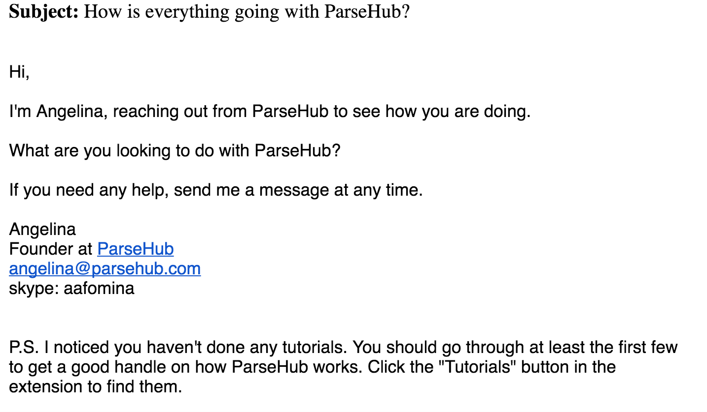
Email 5 days after customer signs up:
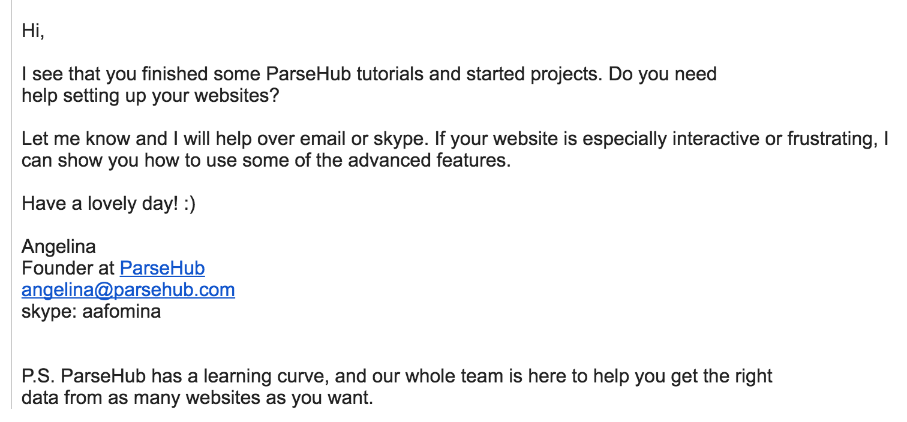
Start sending on-boarding emails to your users right away. One on the 1st day and one on the 5th day.
4. Encouraged loyal customers to create content about us
Step 1: Ask customers to create content for you.
We often get requests for discounts. Start-ups, students and some not-for-profits can’t afford our $100 month subscription price. We offer them a 50% discount on our product for that month, in exchange for an article.
What you can ask:
- A 750 - 1,500 word article for you own blog post that includes either a tutorial of your product or a unique way that the customer used your product. I sometimes ask for any compelling research or visualizations that came from data acquired by ParseHub.
- An article published on the customer's blog about the product, or comparing the product to other competitors. This should be an independent, real pros and cons review.
- An article on a another publications, that the customer has connections to.
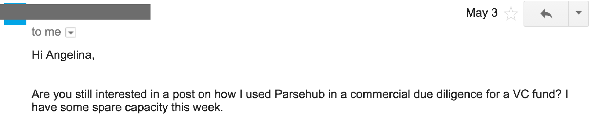
Step 2: Provide amazing support, so customers feel compelled to write about you.
A customer of ours mentioned us on Forbes. Another customer wrote an article in Russian, because I was able to provide him customer support in Russian.
Craig Bloodworth even developed a ParseHub Web Data Connector for Tableau, for other people to use. One of our sales was a direct result of the customer using the connector between ParseHub & Tableau.
We didn’t ask most of our customers to write about us. They just did! If someone finds your product useful and your customer support friendly they will feel compelled to spread the word out for you.
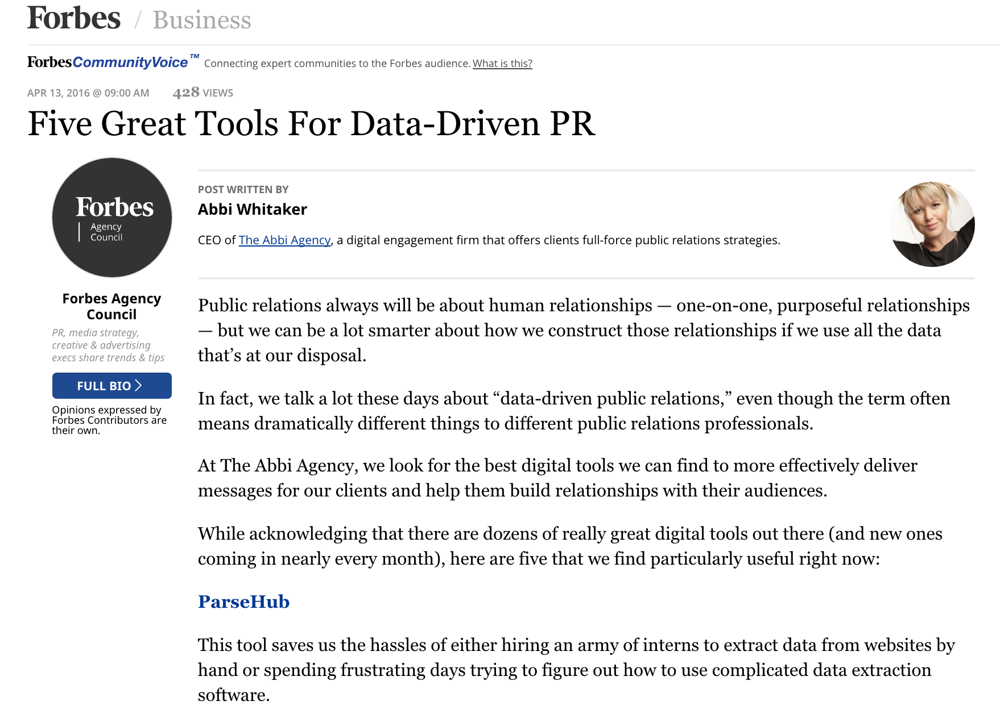
content will be created for you organically if your customers find your product valuable, and your support exceptional. You can also ask customers to write for your blog in exchange for a discount to your product.
5. Promoted ParseHub on comparison websites and forums
Writing content is not enough, you have to spend considerable amounts of time promoting whatever you wrote online as well. I found writing very specific and informative answers on Quora.com with a link to the content on our blog to be effective. Over the past year my answers have been viewed 32.6 K times. My co-founder answered one question and that question was viewed 13 K times.
First, I would get your product on any product comparison site that either targets your audience or specializes in similar types of products as yours. Secondly, I would post each article that you create on at least 10 different community sites, Q&A sites, LinkedIn groups, Google+ + groups and Facebook groups. After that, find questions that people are already asking online that your product can help answer and craft an educational and captivating response.
Comparison sites to consider:
Community sites to post on:
- Sitepoint
- Datatau
- DesignerNews
- GrowthHackers
- Inbound.org
- Stackoverflow
- Quibb
- GrowthHacking
- GitLab Showcase
Here is a little proof that posting on Reddit works:
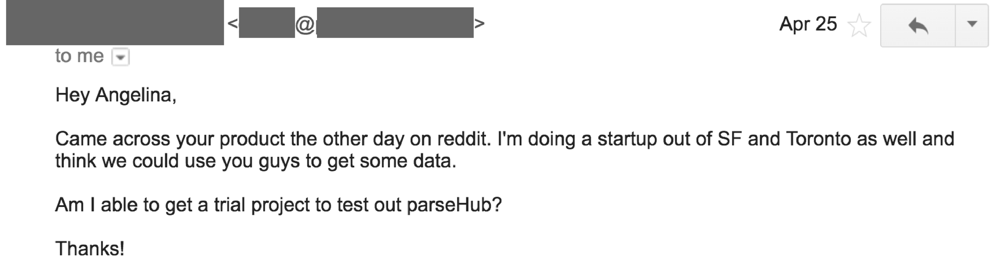
6. Provided exceptional customer support to boost referrals
Paul Graham has a famous quote from his “Do Things That Don’t Scale” post:
“The most common unscalable thing founders have to do at the start is to recruit users manually. Nearly all startups have to. You can't wait for users to come to you. You have to go out and get them.”
Doing just that, my co-founders and I answered every single support request from website visitors, users on the free account and paying customers for 1.5 years. We did this day in and day out until we could afford to hire a full time technical support specialist. Doing this gave us an incredible appreciation for our future support staff, and it also helped us form key relationships with early customers. We were also able to quickly fix bugs that customers reported, making ParseHub a better product.
Email example 1:
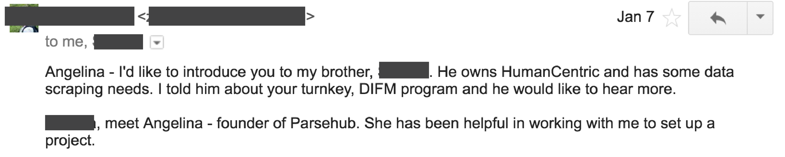
Email example 2:
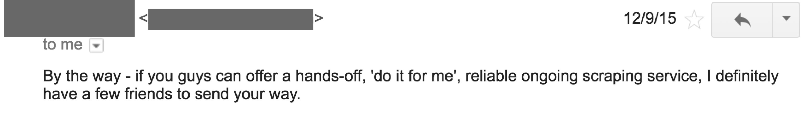
Don’t worry if what you work on doesn’t scale in the early stages of your start-up. Do most of the customer support yourself for the first few months of the company.
Do you have a story to share about your company's growth? What worked for you to grow revenue?
Share in the comments or email me at angelina@parsehub.com